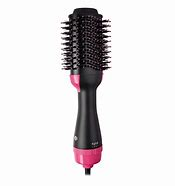
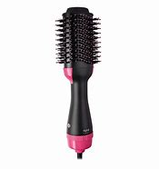
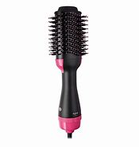
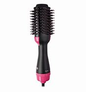

Price:R250
Stock availibility:In stock
1.This hair dryer brush gives your hair a smooth, silky.
2.natural lustrous look by sealing the hair cuticles, reducing split ends and knotting.
3.Ceramic Coating: Protects your hair from over-styling with even heat distribution that penetrates hair quickly from the inside out for less damage
4.3 Heat Settings.
5.The brush will help reduce moisture in hairfor faster drying and less damage.
6.1000 Watt power provides just the right heat.
7.this volumizer can be placed closer to the scalp for lift.
8.Oval Brush Design. Unique Shape for smoothing the hair.while round edges create volume.
| 360° Airflow Vents for Heat Distribution and Faster Drying | Frizz Free Salon Blowouts in Up to Half the Time | Negative Ions, Smooths and Makes Hair Shinier | Multiple Heat Settings for Drying and Styling Flexibility | ||||
|---|---|---|---|---|---|---|---|
| Power: 1000 Watt | Voltage: 110V | Power Cord: 2.0m | Length: 12.8inch/32.5cm | Frequency: 50-60Hz | Tuyere Temperature: 60℃ - 120℃ | Number of gears:4 (high, middle, low, off) | Applicable Hair: Dry &Wet |